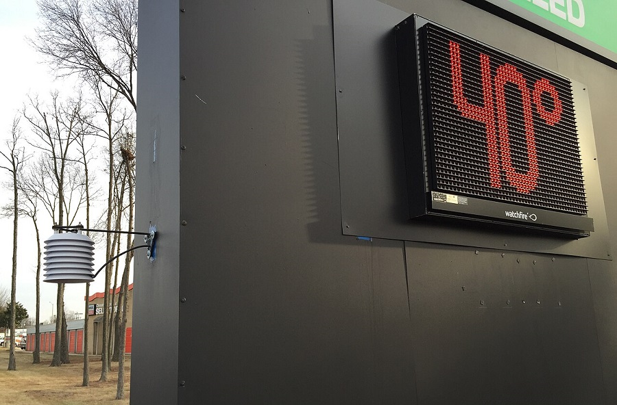
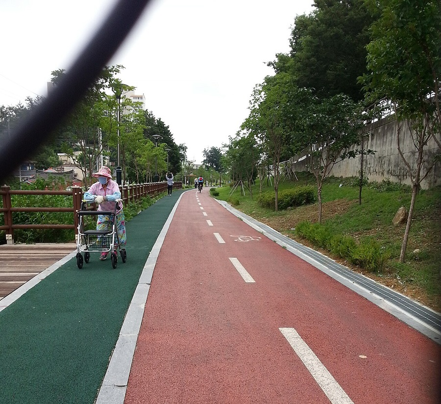

这几天，早晚明显凉下来了，中午太阳底下还是热。一天里头，温差能差出十来度。
这就是秋老虎，立秋以后那阵回热天，一般要折腾到九月中旬才消停。白天还像夏天，早晚已经像秋天。
年轻人可能觉得，多带件衣服的事。可对有些人来说，这几天真得当回事。
说穿了，是血管受不了忽冷忽热。
天热，血管是松的，血往皮肤表面走；天一凉，血管收紧，血压就往上顶。一会儿松一会儿紧，血压跟着上下晃。血管本来就不太好的人，这一晃就容易出毛病。
每年到这个季节，医院心脑血管的急诊都比平时多，不少就是温差闹的。

秋老虎还不光是温差的事。
白天太阳底下照样热，中午在户外待久了，一样可能中暑，别以为只有七八月才中暑。
天气也一天比一天干，早上起来嗓子干、鼻子干，皮肤发紧，这就是秋燥。水要勤喝，别等渴了再喝。
第一类：有高血压、心脑血管病史的老人
天热那阵子，有人觉得血压降了，药就自己停了。天一凉，血压又上来，夜里头晕、起夜摔跤，这个季节真不少见。药不能自己停，减不减量，听医生的。
第二类：习惯一大早出门晨练的人
早上五六点是一天里最凉的时候，冷风一吹，血管收得最紧。锻炼不差这一会儿，等太阳出来暖和点了再出门，一样是锻炼。

第三类：冠心病、放过支架的人
一受凉，冠状动脉容易抽筋，胸口发闷、发紧。这种时候别想着忍忍就过去了。胸闷几分钟不缓解，就上医院。
第四类：哮喘、慢阻肺的患者，尤其是孩子
温差一大，气管容易受刺激，夜里咳嗽、喘。晚上睡觉窗户别开太大，留条缝就行；早晚出门，给口鼻挡点风。
第五类：看着年轻，体检已经亮红灯的人
血脂高、血压临界、常年熬夜、不怎么动。现在看着没事，年纪一大，血管的账早晚要还。
✓穿衣服方便脱加：薄外套叠着穿，热了脱，冷了加。
✓晚上睡觉关好窗，肚子和肩膀盖好，空调别开一整夜。
✓起床慢一点：先在被窝里动动手脚，再坐起来，别猛起。
✓早上起来，先喝一杯温水再出门。
✓降压药、哮喘药，按时吃，别擅自停。
✓家里老人、孩子早晚出门，多带一件外套。
突然头晕，站不稳；
头痛得厉害，和平时不一样；
说话说不清，嘴角歪；
半边手脚发麻，没力气；
胸口闷、疼，几分钟不缓解，还冒冷汗；
老人精神突然变差，嗜睡，叫不醒。
这几条，沾上哪条都别拖。宁可去医院白跑一趟，也别在家里硬扛。
该添衣添衣
该去医院去医院
别硬扛
这个季节，照顾好自己，也提醒一下家里的老人孩子。
本文为健康科普，内容参考国家卫生健康委、中国疾控中心及公开医学资料整理，不能替代医生诊断。身体不适，请及时就医。
图片：Wikimedia Commons（CC 许可）